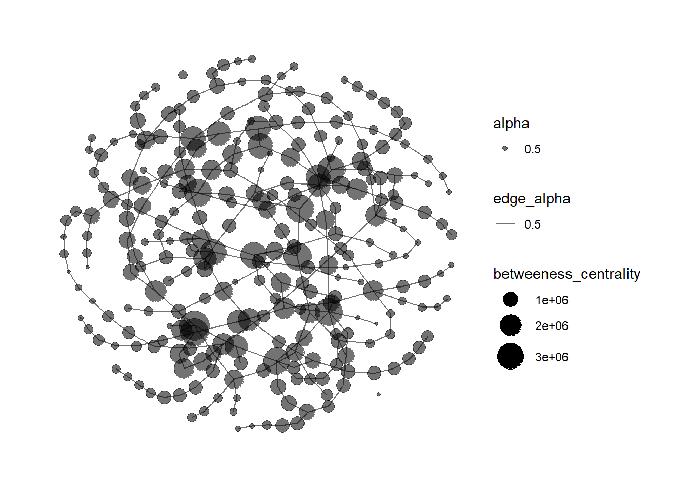

pacman::p_load(corporaexplorer, tidyverse, stringi, rvest)In Class Ex 6
Text Analytics using Corporaexplorer
1. Getting Started
Using the example from the documentation:
https://kgjerde.github.io/corporaexplorer/articles/bible.html
bible <- readr::read_lines("http://www.gutenberg.org/cache/epub/10/pg10.txt")2. Preparing the data
Need to collapse the data into one string
bible <- paste(bible, collapse = "\n")Identifying the beginning and end of the Bible / stripping PJ metadata # (technique borrowed from https://quanteda.io/articles/pkgdown/replication/digital-humanities.html).
start_v <- stri_locate_first_fixed(bible, "The First Book of Moses: Called Genesis")[1]
end_v <- stri_locate_last_fixed(bible, "Amen.")[2]
bible <- stri_sub(bible, start_v, end_v)In the file, every book in the bible is preceded by five newlines, which we use to split our string into a vector where each element is a book.
books <- stri_split_regex(bible, "\n{5}") %>%
unlist %>%
.[-40]
# Removing the heading "The New Testament of the King James Bible",
# which also was preceded by five newlines.Because of the structure of the text in the file: # Replacing double or more newlines with two newlines, and a single newline with space.
books <- str_replace_all(books, "\n{2,}", "NEW_PARAGRAPH") %>%
str_replace_all("\n", " ") %>%
str_replace_all("NEW_PARAGRAPH", "\n\n")
books <- books[3:68] # The two first elements are not booksIdentifying new chapters within each book and split the text into chapters. (The first characters in chapter 2 will e.g. be 2:1)
chapters <- str_replace_all(books, "(\\d+:1 )", "NEW_CHAPTER\\1") %>%
stri_split_regex("NEW_CHAPTER")
# Removing the chapter headings from the text (we want them as metadata).
chapters <- lapply(chapters, function(x) x[-1])We are not quite happy with the long book titles in the King James Bible, so we retrieve shorter versions from esv.org which will take up less space in the corpus map plot.
book_titles <- read_html("https://www.esv.org/resources/esv-global-study-bible/list-of-abbreviations") %>%
html_nodes("td:nth-child(1)") %>%
html_text() %>%
.[13:78] # Removing irrelevant elements after manual inspection.
# We add a column indicating whether a book belongs to the Old or New Testament,
# knowing that they contain respectively 39 and 27 books.
testament <- c(rep("Old", 39), rep("New", 27))# Data frame with one book as one row.
bible_df <- tibble::tibble(Text = chapters,
Book = book_titles,
Testament = testament)
# We want each chapter to be one row, but keep the metadata (book and which testament).
bible_df <- tidyr::unnest(bible_df, Text)3. Using corporaexplorer
The three most important arguments are:
dataset: a data frame with, as a minimum, aTextcolumn. Ifdate_based_corpusisTRUE(the default), dataset must also contain a column “Date” (of class Date).date_based_corpus. Default isTRUE. Set toFALSEif the corpus is not to be organised according to document dates.grouping_variable. If date_based_corpus is TRUE, this argument is ignored. If date_based_corpus is FALSE, this argument can be used to group the documents, e.g. ifdatasetconsists of chapters belonging to different books, and the book indicated in a “Book” column, set this argument to"Book"
Note
Text column - must be named as Text (with capital T)
Date field - must be in date format that R can read (cannot be 1, 2, 3, 4, 5 etc)
As this is a corpus which is not organised by date, we set date_based_corpus to FALSE. # Because we want to organise our exploration around the books in the Bible, we pass "Book" to the grouping_variable argument. We specify which metadata columns we want to be displayed in the “Document information” tab, using the columns_doc_info argument.
KJB <- prepare_data(dataset = bible_df,
date_based_corpus = FALSE,
grouping_variable = "Book",
columns_doc_info = c("Testament", "Book"))Run corpus explorer:
https://kgjerde.github.io/corporaexplorer/articles/usage.html
class(KJB)[1] "corporaexplorerobject"explore(KJB)Shiny applications not supported in static R Markdown documents
4. Using textnets
5. Using LDavis
Network Graphs Visualisation
1. Loading the Packages
pacman::p_load(jsonlite, tidygraph, ggraph, visNetwork, graphlayouts, ggforce, skimr, tidytext, tidyverse)2. Importing the data
Here, we are using the data from VAST Challenge in 2023.
https://vast-challenge.github.io/2023/MC3.html
For our data - we need to rename the columns that we want to have a source and target under links.
mc3_data <- fromJSON ("data/MC3.json")class(mc3_data)[1] "list"mc3_edges <-
as_tibble(mc3_data$links) %>%
distinct() %>%
mutate(source = as.character(source),
target = as.character(target),
type = as.character(type)) %>%
group_by(source,target, type) %>%
summarise(weights=n()) %>%
filter(source!=target) %>%
ungroup()mc3_nodes <-
as_tibble(mc3_data$nodes) %>%
distinct() %>%
mutate(id = as.character(id),
country = as.character(country),
type = as.character(type),
product_services = as.character(product_services),
revenue_omu = as.numeric(as.character(revenue_omu))) %>%
select(id, country, type, revenue_omu, product_services)id1 <- mc3_edges %>%
select(source) %>%
rename(id = source)
id2 <- mc3_edges %>%
select(target) %>%
rename (id=target)
mc3_nodes1 <- rbind(id1,id2) %>%
distinct() %>%
left_join(mc3_nodes,
by =join_by(id),
unmatched = "drop")mc3_graph <- tbl_graph (nodes = mc3_nodes1,
edges = mc3_edges,
directed = FALSE) %>%
mutate (betweeness_centrality = centrality_betweenness(),
closeness_centrality = centrality_closeness()
)mc3_graph %>%
filter(betweeness_centrality >= 300000) %>%
ggraph(layout = "fr") +
geom_edge_link (aes(alpha=0.5)) +
geom_node_point( aes(
size = betweeness_centrality,
colors = "lightblue",
alpha = 0.5 )) +
scale_size_continuous(range=c(1,10)) +
theme_graph()
References
- More professional software for network graphs - especially if we are handling large networks
- Free software for network visualisation